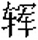

一 读经与读史
一个阔人说要读经[289]，嗡的一阵一群狭人也说要读经。岂但“读”而已矣哉，据说还可以“救国”哩。“学而时习之，不亦说乎？”[290]那也许是确凿的罢，然而甲午战败了，——为什么独独要说“甲午”呢，是因为其时还在开学校，废读经[291]以前。
我以为伏案还未功深的朋友，现在正不必埋头来哼线装书。倘其咿唔日久，对于旧书有些上瘾了，那么，倒不如去读史，尤其是宋朝明朝史，而且尤须是野史；或者看杂说。
现在中西的学者们，几乎一听到“钦定四库全书”[292]这名目就魂不附体，膝弯总要软下来似的。其实呢，书的原式是改变了，错字是加添了，甚至于连文章都删改了，最便当的是《琳琅秘室丛书》[293]中的两种《茅亭客话》[294]，一是宋本，一是四库本，一比较就知道。“官修”而加以“钦定”的正史也一样，不但本纪咧，列传咧，要摆“史架子”；里面也不敢说什么。据说，字里行间是也含着什么褒贬的，但谁有这么多的心眼儿来猜闷壶卢。至今还道“将平生事迹宣付国史馆立传”，还是算了罢。
野史和杂说自然也免不了有讹传，挟恩怨，但看往事却可以较分明，因为它究竟不像正史那样地装腔作势。看宋事，《三朝北盟汇编》[295]已经变成古董，太贵了，新排印的《宋人说部丛书》[296]却还便宜。明事呢，《野获编》[297]原也好，但也化为古董了，每部数十元；易于入手的是《明季南北略》[298]，《明季稗史汇编》[299]，以及新近集印的《痛史》[300]。
史书本来是过去的陈帐簿，和急进的猛士不相干。但先前说过，倘若还不能忘情于咿唔，倒也可以翻翻，知道我们现在的情形，和那时的何其神似，而现在的昏妄举动，胡涂思想，那时也早已有过，并且都闹糟了。
试到中央公园去，大概总可以遇见祖母带着她孙女儿在玩的。这位祖母的模样，就预示着那娃儿的将来。所以倘有谁要预知令夫人后日的丰姿，也只要看丈母。不同是当然要有些不同的，但总归相去不远。我们查帐的用处就在此。
但我并不说古来如此，现在遂无可为，劝人们对于“过去”生敬畏心，以为它已经铸定了我们的运命。Le Bon[301]先生说，死人之力比生人大，诚然也有一理的，然而人类究竟进化着。又据章士钊总长说，则美国的什么地方已在禁讲进化论[302]了，这实在是吓死我也，然而禁只管禁，进却总要进的。
总之：读史，就愈可以觉悟中国改革之不可缓了。虽是国民性，要改革也得改革，否则，杂史杂说上所写的就是前车。一改革，就无须怕孙女儿总要像点祖母那些事，譬如祖母的脚是三角形，步履维艰的，小姑娘的却是天足，能飞跑；丈母老太太出过天花，脸上有些缺点的，令夫人却种的是牛痘，所以细皮白肉：这也就大差其远了。
十二月八日。
二 捧与挖
中国的人们，遇见带有会使自己不安的朕兆的人物，向来就用两样法：将他压下去，或者将他捧起来。
压下去就用旧习惯和旧道德，或者凭官力，所以孤独的精神的战士，虽然为民众战斗，却往往反为这“所为”而灭亡。到这样，他们这才安心了。压不下时，则于是乎捧，以为抬之使高，餍之使足，便可以于己稍稍无害，得以安心。
伶俐的人们，自然也有谋利而捧的，如捧阔老，捧戏子，捧总长之类；但在一般粗人，——就是未尝“读经”的，则凡有捧的行为的“动机”，大概是不过想免害。即以所奉祀的神道而论，也大抵是凶恶的，火神瘟神不待言，连财神也是蛇呀刺蝟呀似的骇人的畜类；观音菩萨倒还可爱，然而那是从印度输入的，并非我们的“国粹”。要而言之：凡是被捧者，十之九不是好东西。
既然十之九不是好东西，则被捧而后，那结果便自然和捧者的希望适得其反了。不但能使不安，还能使他们很不安，因为人心本来不易餍足。然而人们终于至今没有悟，还以捧为苟安之一道。
记得有一部讲笑话的书，名目忘记了，也许是《笑林广记》[303]罢，说，当一个知县的寿辰，因为他是子年生，属鼠的，属员们便集资铸了一个金老鼠去作贺礼。知县收受之后，另寻了机会对大众说道：明年又恰巧是贱内的整寿；她比我小一岁，是属牛的。其实，如果大家先不送金老鼠，他决不敢想金牛。一送开手，可就难于收拾了，无论金牛无力致送，即使送了，怕他的姨太太也会属象。象不在十二生肖之内，似乎不近情理罢，但这是我替他设想的法子罢了，知县当然别有我们所莫测高深的妙法在。
民元革命时候，我在S城，来了一个都督。[304]他虽然也出身绿林大学，未尝“读经”（？），但倒是还算顾大局，听舆论的，可是自绅士以至于庶民，又用了祖传的捧法群起而捧之了。这个拜会，那个恭维，今天送衣料，明天送翅席，捧得他连自己也忘其所以，结果是渐渐变成老官僚一样，动手刮地皮。
最奇怪的是北几省的河道，竟捧得河身比屋顶高得多了。当初自然是防其溃决，所以壅上一点土；殊不料愈壅愈高，一旦溃决，那祸害就更大。于是就“抢堤”咧，“护堤”咧，“严防决堤”咧，花色繁多，大家吃苦。如果当初见河水泛滥，不去增堤，却去挖底，我以为决不至于这样。
有贪图金牛者，不但金老鼠，便是死老鼠也不给。那么，此辈也就连生日都未必做了。单是省却拜寿，已经是一件大快事。
中国人的自讨苦吃的根苗在于捧，“自求多福”[305]之道却在于挖。其实，劳力之量是差不多的，但从惰性太多的人们看来，却以为还是捧省力。
十二月十日。
三 最先与最后
《韩非子》说赛马的妙法，在于“不为最先，不耻最后”。[306]这虽是从我们这样外行的人看起来，也觉得很有理。因为假若一开首便拚命奔驰，则马力易竭。但那第一句是只适用于赛马的，不幸中国人却奉为人的处世金鍼了。
中国人不但“不为戎首”，“不为祸始”，甚至于“不为福先”。[307]所以凡事都不容易有改革；前驱和闯将，大抵是谁也怕得做。然而人性岂真能如道家所说的那样恬淡；欲得的却多。既然不敢径取，就只好用阴谋和手段。以此，人们也就日见其卑怯了，既是“不为最先”，自然也不敢“不耻最后”，所以虽是一大堆群众，略见危机，便“纷纷作鸟兽散”了。如果偶有几个不肯退转，因而受害的，公论家便异口同声，称之曰傻子。对于“锲而不舍”[308]的人们也一样。
我有时也偶尔去看看学校的运动会。这种竞争，本来不像两敌国的开战，挟有仇隙的，然而也会因了竞争而骂，或者竟打起来。但这些事又作别论。竞走的时候，大抵是最快的三四个人一到决胜点，其余的便松懈了，有几个还至于失了跑完豫定的圈数的勇气，中途挤入看客的群集中；或者佯为跌倒，使红十字队用担架将他抬走。假若偶有虽然落后，却尽跑，尽跑的人，大家就嗤笑他。大概是因为他太不聪明，“不耻最后”的缘故罢。
所以中国一向就少有失败的英雄，少有韧性的反抗，少有敢单身鏖战的武人，少有敢抚哭叛徒的吊客；见胜兆则纷纷聚集，见败兆则纷纷逃亡。战具比我们精利的欧美人，战具未必比我们精利的匈奴蒙古满洲人，都如入无人之境。“土崩瓦解”这四个字，真是形容得有自知之明。
多有“不耻最后”的人的民族，无论什么事，怕总不会一下子就“土崩瓦解”的，我每看运动会时，常常这样想：优胜者固然可敬，但那虽然落后而仍非跑至终点不止的竞技者，和见了这样竞技者而肃然不笑的看客，乃正是中国将来的脊梁。
四 流产与断种
近来对于青年的创作，忽然降下一个“流产”的恶谥，哄然应和的就有一大群。我现在相信，发明这话的是没有什么恶意的，不过偶尔说一说；应和的也是情有可原的，因为世事本来大概就这样。
我独不解中国人何以于旧状况那么心平气和，于较新的机运就这么疾首蹙额；于已成之局那么委曲求全，于初兴之事就这么求全责备？
智识高超而眼光远大的先生们开导我们：生下来的倘不是圣贤，豪杰，天才，就不要生；写出来的倘不是不朽之作，就不要写；改革的事倘不是一下子就变成极乐世界，或者，至少能给我（！）有更多的好处，就万万不要动！……
那么，他是保守派么？据说：并不然的。他正是革命家。惟独他有公平，正当，稳健，圆满，平和，毫无流弊的改革法；现下正在研究室里研究着哩，——只是还没有研究好。
什么时候研究好呢？答曰：没有准儿。
孩子初学步的第一步，在成人看来，的确是幼稚，危险，不成样子，或者简直是可笑的。但无论怎样的愚妇人，却总以恳切的希望的心，看他跨出这第一步去，决不会因为他的走法幼稚，怕要阻碍阔人的路线而“逼死”他；也决不至于将他禁在床上，使他躺着研究到能够飞跑时再下地。因为她知道：假如这么办，即使长到一百岁也还是不会走路的。
古来就这样，所谓读书人，对于后起者却反而专用彰明较著的或改头换面的禁锢。近来自然客气些，有谁出来，大抵会遇见学士文人们挡驾：且住，请坐。接着是谈道理了：调查，研究，推敲，修养，……结果是老死在原地方。否则，便得到“捣乱”的称号。我也曾有如现在的青年一样，向已死和未死的导师们问过应走的路。他们都说：不可向东，或西，或南，或北。但不说应该向东，或西，或南，或北。我终于发见他们心底里的蕴蓄了：不过是一个“不走”而已。
坐着而等待平安，等待前进，倘能，那自然是很好的，但可虑的是老死而所等待的却终于不至；不生育，不流产而等待一个英伟的宁馨儿[309]，那自然也很可喜的，但可虑的是终于什么也没有。
倘以为与其所得的不是出类拔萃的婴儿，不如断种，那就无话可说。但如果我们永远要听见人类的足音，则我以为流产究竟比不生产还有望，因为这已经明明白白地证明着能够生产的了。
十二月二十日。
注 释
[288] 本篇最初分三次发表于1925年12月10日、12日、22日北京《国民新报副刊》。
[289] 一个阔人 指章士钊。关于读经“救国”，参看本卷第141页注〔12〕。
[290] “学而时习之，不亦说乎” 语出《论语·学而》。孔子语，“说”同“悦”。
[291] 开学校，废读经 清政府在1894年（光绪二十年，甲午）中日战争中战败后，曾采取了一些改良主义的办法。戊戌变法（1898）期间，光绪帝于七月六日下诏普遍设立中小学，改书院为学堂；六月二十日曾诏令在科举考试中废止八股，“向用四书文者，一律改试策论”。变法失败后，清廷于1902年（光绪二十八年）颁布《钦定学堂章程》，开始兴办学堂；1905年又下诏停科举，自此废止读经。
[292] “钦定四库全书” 清乾隆三十八年（1773）设立四库全书馆，把宫中所藏和民间所献书籍，命馆臣分别加以选择、钞录，费时十年，共选录书籍三千五百零三种，分经、史、子、集四部，即所谓“钦定四库全书”。它在一定程度上起了保存和整理文献的作用；但这也是清政府文化统制的具体措施之一，凡被认为“违碍”的书，或遭“全毁”、“抽毁”，或被加以篡改，使后来无可依据。
[293] 《琳琅秘室丛书》 清代胡珽校刊，共五集，计三十六种。所收主要是掌故、说部、释道方面的书。
[294] 《茅亭客话》 宋代黄休复著，共十卷。内容是记录从五代到宋代真宗时（约当公元十世纪）的蜀中杂事。
[295] 《三朝北盟汇编》 宋代徐梦莘编，共二百五十卷。书中汇辑从宋徽宗政和七年（1117）到高宗绍兴三十一年（1161）间宋金和战的史料。
[296] 《宋人说部丛书》 指商务印书馆印行的“宋人说部书”（都是笔记小说），夏敬观编校，共出二十余种。
[297] 《野获编》 即《万历野获编》，明代沈德符著，三十卷，补遗四卷。记载明代开国至神宗万历间的典章制度和街谈巷语。
[298] 《明季南北略》 指《明季北略》和《明季南略》。清代计六奇编。《北略》二十四卷，记载万历四十四年（1616）至崇祯十七年（1644）间事；《南略》十八卷，与《北略》相衔接，记至清康熙元年（1662）南明永历帝被害止。
[299] 《明季稗史汇编》 清代留云居士辑，共二十七卷，汇刊稗史十六种。各书所记都是明末的遗事。有都城留云居排印本。
[300] 《痛史》 乐天居士编，共三集。辛亥革命后由上海商务印书馆汇印，收明末清初野史二十余种。
[301] LeBon 勒朋（1841—1931），法国社会心理学家。他在《民族进化的心理定律》一书中说：“欲了解种族之真义必将之同时伸长于过去与将来，死者较之生者是无限的更众多，也是较之他们更强有力。”（张公表译，商务印书馆版）参看《热风·随感录三十八》。
[302] 关于美国禁讲进化论，章士钊在《甲寅》周刊第一卷第十七号（1925年11月7日）的《再疏解

义》中说：“田芮西州Tennessee。尊崇耶教较笃者也。曾于州宪订明。凡学校教科书。理与圣经相牾。应行禁制。州有市曰堞塘Dayton。其小学校中。有教员曰师科布John Thomas Scopes。以进化论授于徒。州政府大怒。谓其既违教义。复触宪纲。因名捕师氏。下法官按问其罪。”后来因“念其文士。罚锾百元”。进化论，英国生物学家达尔文（1809—1882）在《物种起源》等著作中提出的以自然选择为基础的进化学说。它揭示了生物的起源、变异和发展的规律，对近代生物科学产生了巨大影响。[303] 《笑林广记》 明代冯梦龙编有《广笑府》十三卷，至清代被禁止，后来书坊改编为《笑林广记》，共十二卷，编者署名游戏主人。关于金老鼠的笑话，见该书卷一（亦见《广笑府》卷二）。
[304] 民元革命 即辛亥革命。S城，指绍兴；都督，指王金发（1883—1915），浙江嵊县人。曾留学日本，加入光复会。辛亥革命后任绍兴军政分府都督。后被督理浙江军务朱瑞杀害。参看《朝花夕拾·范爱农》及其有关注释。王金发曾领导浙东洪门会党平阳党，号称万人，故作者戏称他“出身绿林大学”。
[305] “自求多福” 语出《诗经·大雅·文王》：“永言配命，自求多福。”意思是只要顺天命而行，则福禄自来。
[306] “不为最先，不耻最后” 参看本卷第118页注〔29〕。
[307] “不为戎首” 语出《礼记·檀弓》：“毋为戎首，不亦善乎？”据汉代郑玄注：“为兵主来攻伐曰戎首”。“不为祸始”、“不为福先”，语出《庄子·刻意》：“不为福先，不为祸始；感而后应，迫而后动，不得已而后起。”
[308] “锲而不舍” 语出《荀子·劝学》：“锲而不舍，金石可镂。”锲，雕刻的意思。
[309] 宁馨儿 晋宋时代俗语。《晋书·王衍传》：“何物老妪，生宁馨儿。”宁馨儿是“这样的孩子”的意思。宁，这样；馨，语助词。